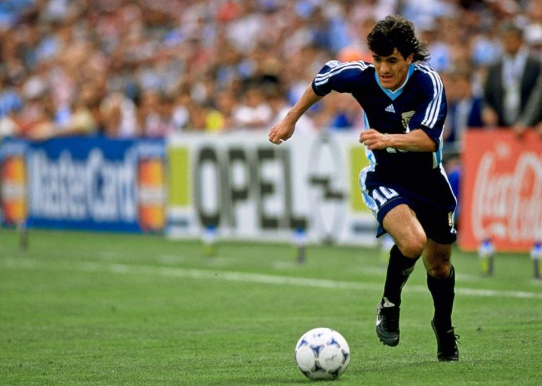
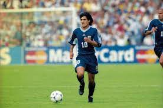

Un día como hoy pero en 1993 en Miami, Estados Unidos, debutó en la Selección Argentina el delantero
Ariel “Burrito” Ortega. En ese partido amistoso, la Argentina del Coco Basile derrotó a Alemania por 2 a
1 con tantos de Abel Balbo y Hernán Díaz.
En total el jujeño jugó en la Selección 88 partidos y haciendo 17 goles. Disputó los Mundiales de Usa
94, Francia 98 y Corea- Japón 2002, jugando 11 partidos y haciendo 2 goles: ante Jamaica en Francia 98.
Logró la Medalla de Plata en los Juegos Olímpicos de Atlanta de 1996, después de que Argentina perdiera
la final ante Nigeria.
Dueño de una gran capacidad para gambetear, supo hacerle un lugar entre los mejores de su momento:
disfrutó al máximo a Diego Maradona en el Mundial de 1994, al mejor Gabriel Batistuta en Francia 98 y a
Marcelo Bielsa en Corea –Japón 2002.
Su mejor partido en las Copas del Mundo fue en Francia, cuando en Octavos de Final, Argentina le gano a
Inglaterra por penales. Ese primer tiempo fue de los mejor de Ortega en la Selección, en donde metió 4
caños e hizo jugar al equipo.
Por otra parte, su peor momento en los Mundiales, fue también en Francia, cuando Argentina quedo
eliminado ante Holanda, y el delantero se fue expulsado después de darle un cabezazo al arquero Van der
Saar.
Su despedida de la Selección se la dio el mismísimo Diego Maradona, cuando el 10 , lo convoco para un
amistoso ante Haití en 2010, con triunfo claro y contundente de los albicelestes por 4 a 0.